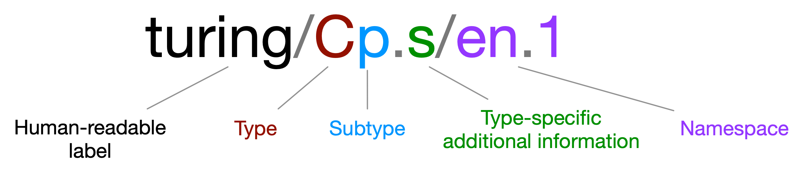

Semantic Hypergraph notation
SH notation is based on two simple principles:
Every hyperedge belongs to one of eight basic types.
The first element of a hyperedge is a connector, followed by arguments that can be atomic or non-atomic hyperedges.
This is enough to define a valid hyperedge that conveys the meaning of a sentence in natural language, for example “The sky is blue”:
(is/P (the/M sky/C) blue/C)
Beyond this, the notation allows for more things: argument roles, subtypes, further type-specific additional information and namespaces. We will introduce these concepts gradually, by order of general usefulness. The two principles above extended with argument roles (which we will yet introduce) already capture a great deal of information contained in natural language, and sophisticated knowledge inference and exploration tasks can be performed at this level, while keeping the notation light and friendly to humans.
Then, the additional notational devices can be employed when useful. Of course, it is always possible to utilize full notation for machine tasks while presented a simplified version for human-friendliness.
Hyperedge types
All valid semantic hyperedges are of one of the 8 types shown in the table below. The first 6 types can be explicit (directly annotating an atomic hyepredge) of implicit (inferred from the types of the elements of the hyperedge). The last two types are always implicit.
Code |
Type |
Purpose |
Example |
|---|---|---|---|
Atomic or non-atomic |
|||
C |
concept |
Define atomic concepts |
apple/C |
P |
predicate |
Build relations |
(is/P berlin/C nice/C) |
M |
modifier |
Modify any other hyperedge type, including itself |
(red/M shoes/C) |
B |
builder |
Build concepts from concepts |
(of/B capital/C germany/C) |
T |
trigger |
Build specifications |
(in/T 1994/C) |
J |
conjunction |
Define sequences of hyperedges |
(and/J meat/C potatoes/C) |
Non-atomic only |
|||
R |
relation |
Express facts, statements, questions, orders, … |
(is/P berlin/C nice/C) |
S |
specifier |
Relation specification (e.g. condition, time, …) |
(in/T 1976/C) |
Type inference rules
The table below shows how implicit hyperedge types are inferred.
Element types |
Resulting type |
|---|---|
(M x) |
x |
(B C C+) |
C |
(T [CR]) |
S |
(P [CRS]+) |
P |
(J x y+) |
x |
We use the notation of regular expressions: the symbol + is used to denote one or more entities with the type that precedes it, while square brackets indicate several possibilities (for instance, [CRS]+ means “at least one of any of C, R or S” types). x means any type: (M x) is of type x.
Argument roles
The type part of the atom can include subparts after the type specifier. The meaning of these subsequent subparts is type-specific. The most useful of those are argument roles in predicates and builders. As the name indicates, they specify the role that the following arguments play in the construct.
Predicates
When present, the first additional information subpart for predicates is used to specify the role played in a relation by each of its parameters, with the following codes:
s: subject
p: passive subject
a: agent
c: subject complement
o: direct object
i: indirect object
x: specification
t: parataxis
j: interjection
r: relative relation
?: undetermined
These codes are used to build strings, where each character corresponds to the parameter of the relation in the equivalent position. For example, consider the hyperedge:
(is/P.sc (the/M sky/C) blue/C)
The sc subpart indicates that the first parameter (“the sky”) plays the role of subject, and the second one (“blue”), plays the role of subject complement.
Builders
When present, the first additional information subpart for builders is used to distinguish the main concepts from the auxiliary ones, with the following codes:
m: main concept
a: auxiliary concept
These codes are used to build strings, where each character corresponds to the parameter of the builder in the equivalent position. For example, consider the hyperedge:
(of/B.ma founder/C psychoanalysis/C)
The ma subpart indicates that the first concept following the builder should be considered a main concept, and the next one auxiliary. This means that “founder of psychoanalysis” is a type of “founder”. In other words, auxiliary concepts serve the role of making the main ones more specific.
Subtypes
Subtypes are represented by a lowercase character following the main type code. They provide further distinctions, for example that a predicate is declarative (Pd), or that a concept is common (Cc), or that a modifier is a determinant (Md):
(is/Pd.sc (the/Md sky/Cc) blue/Cc)
Below we show possible subtypes for several main types.
Concept
Code |
Subtype |
Example |
|---|---|---|
Cc |
common |
apple/Cc |
Cp |
proper |
mary/Cp |
Cn |
number |
27/Cn |
Ci |
pronoun |
she/Ci |
Cw |
interrogative |
who/Cw |
Predicate
Code |
Subtype |
Example |
|---|---|---|
Pd |
declarative |
is/Pd |
P? |
interrogative |
is/P? |
P! |
imperative |
go/P! |
Builder
Code |
Subtype |
Example |
|---|---|---|
Bp |
possessive |
‘s/Bp |
Br |
relational |
in/Br |
Modifier
Code |
Subtype |
Example |
|---|---|---|
Ma |
adjective |
green/Ma |
Mp |
possessive |
my/Mp |
Md |
determinant |
the/Md |
M# |
number |
100/M# |
Mn |
negation |
not/Mn |
Mv |
verbal |
will/Mv |
Trigger
Code |
Subtype |
Example |
|---|---|---|
T? |
conditional |
if/Tc |
Tt |
temporal |
when/Tt |
Tl |
local |
where/Tl |
Tm |
modal |
modal/Tm |
T> |
causal |
because/T> |
T= |
comparative |
like/T= |
Tc |
concessive |
although/Tc |
Further type-specific additional information
Beyond argument roles, other forms of type-specific additional information are possible for the various types.
Concepts
When present, the first additional information subpart for concepts indicates number, with the following codes:
s: singular, example: apple/Cc.s
p: plural, example: apples/Cc.p
Predicates
Beyond argument roles, a second additional information subpart for predicates can be used to specify the features of the verb underlying the predicate. The following 7 features are specified:
tense: past (<), present (|) or future (>)
verb form: finite (f) or infinitive (i)
aspect: perfect (f) or progressive (g)
mood
person: first (1), second (2) or third (3)
number: singular (s) or plural (p)
verb type
A string is built in the above order to specify the verb features of a predicate. Any feature can be left unspecified, by using a dash character (-). For example, consider the hyperedge:
(is/P?.cs.|f–3s- (what/Mw time/Cc.s) it/Ci)
The predicate specifies four verb features: present tense (|), finite form (f), third person (3) and singular number (s).
Modifiers
When the modifer is verbal, the first additional information subpart can be used to specify the features of the underlying verb. The notation is exactly the same as the one used for predicates, but in predicates this corresponds to the second additional information subpart. For example, consider the non-atomic predicate:
(have/Mv.|f—– (been/Mv.<pf—- tracking/Pd.sox.|pg—-))
Namespaces
Namespaces serve two functions:
To identify the language or symbolic space to which an atom belongs;
To distinguish atoms that have different meanings, but would otherwise correspond to the exact same string.
In the first case, we can specify that an atom corresponds to an English word like this:
sky/Cp.s/en
Or to a German word like this:
himmel/Cp.s/de
Or that it is a special atom defined by Graphbrain:
+/B/.
In the second case, another subparts can be added to provide a distinction. For example, suppose we want to distinguish Cambridge (UK) from Cambridge (Mass., USA). We could use:
cambridge/Cp.s/en.1
cambridge/Cp.s/en.2
Full atom structure
We show here the full atom structure, including all optional parts.
Special atoms
The two special atoms below come predefined with Graphbrain and are very frequently useful.
Atom |
Purpose |
Example |
|---|---|---|
+/B/. |
Define compound nouns |
(+/B.am/. alan/Cp.s turing/Cp.s) |
:/J/. |
Generic conjunction |